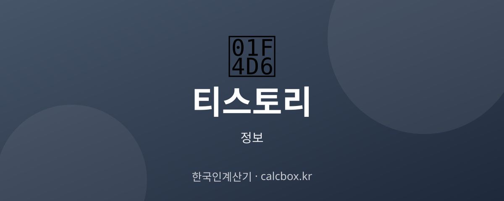

티스토리 완전정리 — 특징과 블로그 시작하는 법
수익형 블로그로 많이 언급되는 티스토리. 어떤 블로그 서비스이고 어떤 특징이 있는지, 시작하는 방법까지 정리했습니다.

티스토리란?
티스토리(Tistory)는 카카오가 운영하는 블로그 서비스입니다. 누구나 무료로 계정을 만들어 글·사진·동영상을 올리며 자신만의 블로그를 운영할 수 있습니다.
'설치형 블로그'에 가까운 자유로운 커스터마이징과, 광고를 붙여 수익을 낼 수 있는 개방성 때문에 특히 정보성·수익형 블로그를 운영하려는 사람들에게 인기가 많습니다.
티스토리의 특징
- 높은 자유도 — HTML·CSS로 스킨을 직접 수정할 수 있어 디자인·구조를 원하는 대로 꾸밀 수 있습니다.
- 광고 수익화 — 구글 애드센스 등 광고를 자유롭게 붙일 수 있어 수익형 블로그로 많이 쓰입니다.
- 검색 노출 — 다음·구글 등 검색엔진에 노출되기 쉬워 유입을 늘리기에 유리합니다.
- 독립 도메인 — 개인 도메인을 연결해 나만의 주소로 운영할 수 있습니다.
네이버 블로그와의 차이
많이 비교되는 네이버 블로그와의 차이를 이해하면 선택이 쉬워집니다.
- 수익화: 티스토리는 외부 광고(애드센스)를 자유롭게 붙일 수 있고, 네이버 블로그는 자체 광고 정책(애드포스트) 위주입니다.
- 커스터마이징: 티스토리는 스킨·코드 수정이 자유롭고, 네이버 블로그는 정해진 틀 안에서 꾸밉니다.
- 노출 환경: 네이버 블로그는 네이버 검색에, 티스토리는 다음·구글 검색에 상대적으로 유리한 편입니다.
- 진입 난이도: 네이버 블로그가 초보자에게 더 쉽고, 티스토리는 자유로운 대신 손이 조금 더 갑니다.
티스토리 시작하는 법
티스토리는 카카오 계정만 있으면 몇 분 만에 시작할 수 있습니다.
- 1) 티스토리 사이트에 접속해 카카오 계정으로 로그인합니다.
- 2) '블로그 만들기'에서 블로그 이름과 주소(아이디)를 정합니다.
- 3) 마음에 드는 스킨(디자인 테마)을 고르고 적용합니다.
- 4) '글쓰기'로 첫 글을 작성하고 카테고리를 정리합니다.
- 5) 필요하면 애드센스·독립 도메인 등 부가 설정을 더합니다.
처음에는 완벽한 디자인보다 꾸준한 글쓰기가 중요합니다. 관심 주제로 정보성 글을 쌓아 가면 검색 유입이 조금씩 늘어납니다.
자주 묻는 질문 (FAQ)
Q. 티스토리는 무료인가요?
네. 카카오 계정만 있으면 무료로 블로그를 만들고 운영할 수 있습니다. 별도 호스팅 비용 없이 글·사진·동영상을 올릴 수 있으며, 원하면 유료로 개인 도메인을 연결할 수도 있습니다.
Q. 티스토리와 네이버 블로그 중 무엇이 좋나요?
목적에 따라 다릅니다. 광고 수익화와 자유로운 디자인을 원하면 티스토리, 네이버 검색 노출과 쉬운 사용을 원하면 네이버 블로그가 유리합니다. 수익형 정보 블로그는 티스토리를 많이 선택합니다.
Q. 티스토리로 수익을 낼 수 있나요?
가능합니다. 구글 애드센스 같은 광고를 붙여 방문자 유입에 따라 수익을 낼 수 있습니다. 다만 애드센스 승인 기준을 충족해야 하고, 꾸준한 양질의 글과 방문자 확보가 전제되어야 합니다.